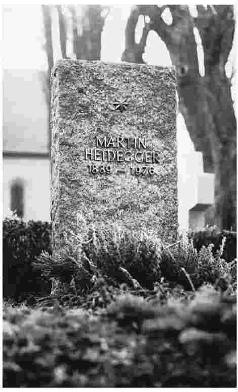

海德格尔首先是一名哲学家。政治是边缘化的。但是我们不能忘记20世纪30年代早期的阴暗插曲：他与纳粹的纠缠。这一经历能告诉我们关于他哲学的什么呢？反之，他的哲学又能告诉我们关于他这一经历的什么呢？不太多。
1948年海德格尔写信给一个昔时的学生赫伯特·马尔库塞，信中说1933年他“期望国家社会主义 [1] 能够对生活进行精神上的翻天覆地的革新，社会敌对势力能够和解，西方的此在观念能够避开共产主义而得到传播”（沃林，162）。他的一些支持者为他的决定正名，理由是当时的纳粹主义是另一个选择。为什么偏爱纳粹主义呢？正如《存在与时间》所描绘的，现代世界已经混乱不堪了。但是在《存在与时间》中鲜有内容偏向纳粹主义而非共产主义，或者（比如）从公众生活中决断地退出的。海德格尔是个保守分子，偏向差异与等级，不支持“一碗水端平”即千篇一律与平均主义，他把后者与美国和苏联相联系。即使在对纳粹主义失去幻想之后，他仍然极为爱国，相信西方的命运将会由德国来决定，虽然其主宰是德国哲学而非德国军队。然而其他保守分子以及爱国者，如斯宾格勒与云格尔，则拒绝了纳粹的诱惑。纳粹主义难道不是本质邪恶的吗？一个人可以说：“我是共产主义者，但我不支持形式化公审或强制性国有化。”但是一个人很难说出：“我是纳粹分子，但我不赞成反犹太主义或大屠杀。”共产主义的弊端是偶然的，而纳粹主义的邪恶似乎为其本质。
然而，现在已成为历史的大部分事件在1933年尚未发生。希特勒于1924年曾在巴伐利亚因企图政变而短暂入狱。不过他从错误中吸取了教训，这一次是通过合法的形式获得了政权。希特勒的的确确信奉反犹太主义。但是当反犹太主义自动把一个政客或运动排除在考虑之外的时候，它还未曾有当前如许的禁忌。当时没有人（除了希特勒自己之外）梦想灭绝犹太人。纳粹主义除了反犹太主义以外还许诺许多吸引人的东西：为失业工人提供就业机会，减轻技术以及资本主义所造成的毁坏，拒付凡尔赛条约的赔款，回归传统（“家庭”）价值观，崇拜青春。现在具有警示意义的德语 单词——F ührer（独裁者）、Volk（民族）、entschlossen（有决心的）——在1933年听起来好像和它们的英语对应词在今天一样无辜：强大的“领导”，带着他的“领导者素质”，以及需要“果断”领导的“人民”或者“民族”。（一个民族不是一个“种族”。生物种族主义对于海德格尔的哲学是陌生的。）海德格尔1945年问道：谁知道“什么已经发生，什么本可避免，如果1933年所有可用的政权都出现……以净化和缓和获取政权的运动？”（沃林，16）。他认为自己能够影响纳粹主义将来的进展。当纳粹主义显露出其“真实”本质之后，这一想法就显得荒唐。然而在1933年并不显得荒唐。海德格尔是从其可能性，而非仅仅实际情况，来看待纳粹主义的。

图10梅斯基希公墓海德格尔之墓（碑上文字为：马丁·海德格尔1889－1976）
如果《存在与时间》的观点没有使海德格尔投身于纳粹主义，那么这些观点也不可能使他对纳粹主义产生免疫力吗？期望一种哲学保护我们免受一个有技巧的政治操纵者的控制，这个政治操纵者能从自己的错误中吸取教训，同时又是一个精明的战略家，有着对于时间掌控的绝佳感觉——这对于一种哲学来说，要求是太高了。没有道德规范，也没有对与错的清单，能够完成这项任务。关于过去的恶人和反英雄的卷宗也不会起作用。见多识广的恶人知道如何逃脱卷宗记载，使自己看起来像个英雄。我们需要警惕的也不仅仅是恶人：用不着有昭著的恶人，人们照样常常把事情弄得一团糟。（寻找造成混乱的恶人往往也是混乱的一部分。）面对所有这些，哲学无法提供绝对有效的护身符。正如海德格尔告诉我们的那样，我们向着一个将来而生，这个将来对于我们而言还是未知的，不带有来自过去的无可争议的指导意义。
海德格尔作为一个哲学家地位如何呢？他的许多核心理论都在某些方面归功于其同时代的人和在他之前的先行者。从认识论到本体论的转换是在海德格尔之前，由尼古拉·哈特曼来完成的。此在的观念是从与胡塞尔的现象学和马克斯·舍勒的哲学人类学的批判性关联中发展起来的。生存（Existenz）、愁虑（Angst）以及当下即是（Augenblick）等概念源自克尔凯郭尔，更直接源自雅斯贝尔斯。海德格尔自己承认他的历史观点受到狄尔泰，特别是狄尔泰的朋友约克·冯·瓦滕堡伯爵的影响。（《存在与时间》，397－404）他不是那么热切地想承认斯宾格勒的影响，后者把存在作为在场的观念归咎于希腊人，并强调天命在历史中的作用。
海德格尔的思想仅仅是源自他人思想的现成品 吗？不是的。海德格尔的思想往前回溯，远远超过了其同时代人以及最近的先行者，最早可以追溯到古希腊人。这使得他与同时代人的直接影响绝缘了，或者说，实际上与任何单个哲学家或学派绝缘了。比如，他追踪愁虑的概念不是简单地追溯到克尔凯郭尔，而是到路德和圣奥古斯丁。事实上他声称，在试图使“奥古斯丁的（即希腊－基督教的）人类学”同“亚里士多德的本体论”相一致的过程中，他提出了自己的此在作为烦的观点。（《存在与时间》，199n.vii）
海德格尔显然不是原封不动地把那些观点和问题移置到他自己当下的问题域。至少他发掘出它们的更加遥远的起源。并且几乎一成不变地，他将自己借来之物烙下自己独特的印记，将它们整合成为一个语境，在其中它们的外来源头几乎不可见。还不止于此：对于这些“放债”的哲学家，海德格尔往往通过重新阐释他们而清偿了自己的“债务”。海德格尔有多少成就归功于康德？有多少归功于亚里士多德？很难作出回答，因为海德格尔是用自己的想法来阐释康德和亚里士多德的。从海德格尔这一边来看，康德和亚里士多德欠海德格尔的“债”就和海德格尔欠他们的一样多。海德格尔对于其他哲学家的解读通常不易被接受。但是同样地，它们也不易被遗忘，而且一旦我们遇到了海德格尔对于一位哲学家的解读，就很难通过完全非海德格尔的眼睛去解读他。
如果说其他人对海德格尔的影响是一个十分微妙的问题，那么他对于别人的影响也同样如此。在表面上他的影响是巨大的：对于神学家（布尔特曼、拉纳、田立克），对于精神分析学家（路德维希·宾斯万格），对于文学批评家（埃米尔·施泰格尔），同时还有对于哲学家（萨特、梅洛－庞蒂、勒维纳斯、奥尔特加·加塞特、伽达默尔以及德里达）。但是他的影响会持续多久呢？海德格尔的哲学会如亚里士多德甚至康德一般长久传承吗？很难作出回答。这取决于我们无法预见的事件，取决于将来的哲学家与非哲学家们如何行事，取决于他们在有海德格尔时是怎么做的以及没有海德格尔时是怎么做的。
海德格尔的影响这一问题还取决于对一个不同问题的回答：海德格尔作为一名思想家的地位是怎样的？这同样难以回答。海德格尔并未简单地对其他哲学家所从事的问题给出解决方法，从而使我们能够通过比较他的解决方式与他人提出的解决方式来衡量他的地位。他提出新问题，他可能无法回答的问题，然而这些问题在他看来比一般的问题更加根本。我们如何衡量他的问题的意义，或者实际上也即他为它们提供的答案的意义呢？这还是——至少部分是——取决于将来别人是怎么对待海德格尔的。海德格尔的价值与他的影响并不是明显区分的两个问题。
现在，虽然还不是非常明晰，海德格尔在我们眼中已不像最初那样是一团迷雾了。他在地位与影响力方面雄心勃勃。他是个不屈不挠的思想家，尝试重新勾画哲学地图。他是个不安宁的、饱受折磨的人，不仅被哲学折磨，还被他模棱两可的基督教信仰折磨。在这些方面他与圣奥古斯丁再相似不过了。